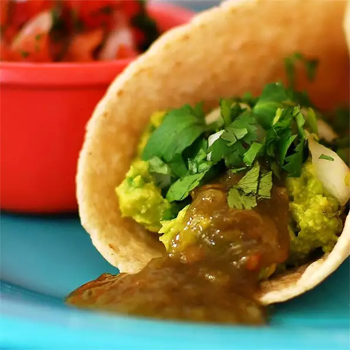

Avocado Tacos
Avocado Tacos

These avocado tacos are a savory meal that is quick and easy to make.
Not only is it quick and easy to make, but it's healthy and full of nutrition.
Ingredients
- 3 avocados - peeled, pitted, and mashed
- ¼ cup onions, diced
- ¼ teaspoon garlic salt
- 12 (6 inch) corn tortillas
- 1 bunch fresh cilantro leaves, finely chopped
- jalapeno pepper sauce, to taste